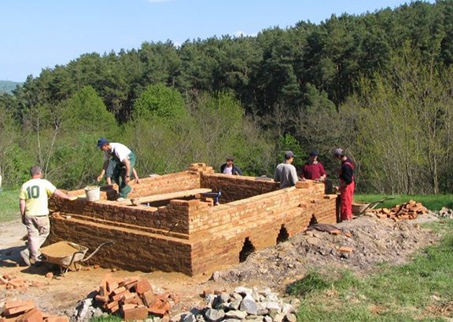

Brick and Tile Kiln
After our work began in the villages it became increasingly obvious that we needed an easily accessible source of traditionally made high quality bricks and tiles for restoration projects. In 2006, encouraged by the Horizon Foundation, we found enough money for the Viscri villagers to erect their own kiln on a hill beyond the southern end of the village.


Colin Richards, an expert in historic restoration from Ludlow in Shropshire, came with other British craftsmen to supervise its construction and first firings, along with our Romanian architect, Gabriel Lambescu.
Besides reviving the village’s forgotten craftsmanship (there had formerly been a kiln in Viscri), it proved a way of bringing additional income into the local community. With three to five firings per year, the kiln is able to produce 6500 bricks and 12000 tiles.